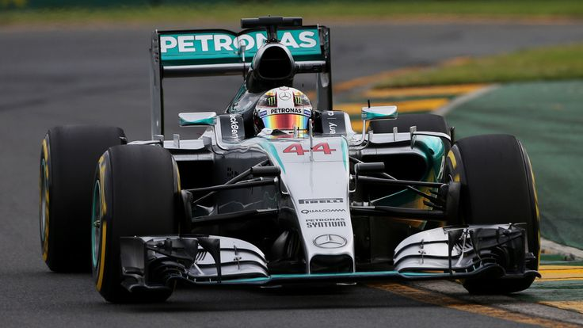

Neste domingo (1º de fevereiro), Flamengo e Corinthians se enfrentam na grande final da Supercopa Rei 2026, a principal decisão que abre a temporada do futebol brasileiro.
A partida será disputada em jogo único no Estádio Mané Garrincha, em Brasília, a partir das 16h (horário de Brasília).
O duelo reúne dois gigantes do futebol nacional: o Fl
amengo, campeão do Campeonato Brasileiro Série A de 2025, e o Corinthians, vencedor da Copa do Brasil de 2025.
O Flamengo chega como favorito pela história recente dos confrontos e pelo bom desempenho no Brasileirão,
enquanto o Corinthians busca surpreender e conquistar seu primeiro título da Supercopa Rei na história moderna da competição.
A final promete ser disputada, com transmissão ao vivo pela TV Globo,
SporTV e serviços de streaming como o Premiere e Globoplay, reunindo atenção de torcedores de todo o Brasil.
